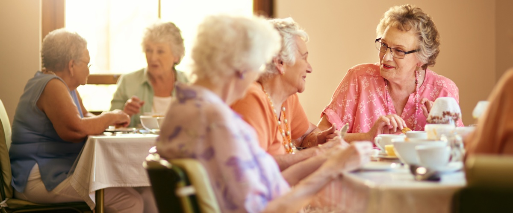
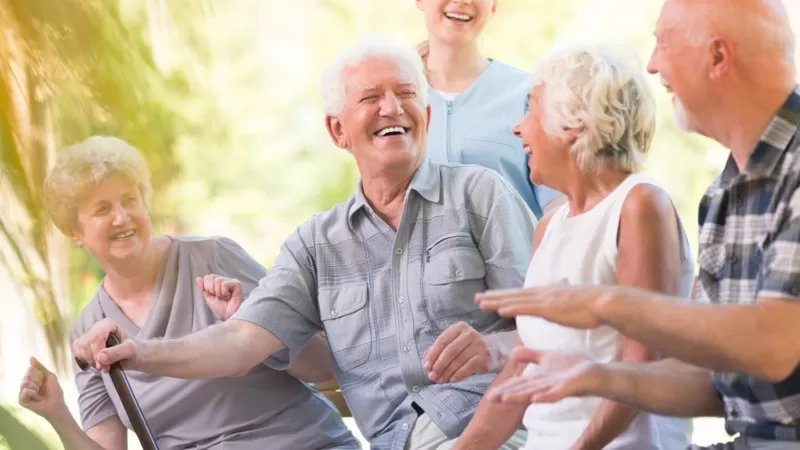

RESIDENCIAL LAS VIOLETAS
Sobre Nosotros
Nuestro objetivo es lograr el mejor nivel de vida para nuestros residentes, optimizando el bienestar fisico, mental y social, con una atencion humanizada y cálida, respetando sus derechos y el de sus familiares, generando espacios participativos y valorando la capacidad de las personas mayores.
Nuestro mision es brindar al adulto mayor la posibilidad de envejecer dignamente, manteniendo sus hábitos y costumbres, mientras le facilitamos el día a día, fomentando su integración social y culturalmente en Paso de los Toros.


- Nuestros objetivos específicos son:
- Recuperar y/o mantener la autonomia del adulto mayor en un ámbito sociabilizador.
- Empoderar los recursos que tienen los adultos mayores y generar estrategias participativas para mantener la capacidad funcional, atenuando el deterioro cognitivo.
- Valorar las experiencias vividas, fortaleciendo la autoestima.
- Matnener las redes de apoyo social, incentivando el interés en las implicancias sociales, culturales, económicas.